🚺
Topic 08
Female Reproductive Cancers
01
Cervical Cancer
- Pre-invasive cancer is limited to the cervix.
- Invasive cancer is in the cervix and other pelvic structures.
- Metastasis usually is confined to the pelvis, but distant metastasis occurs through lymphatic spread.
- Pre malignant changes are described on a continuum from dysplasia, which is the earliest premalignant change.
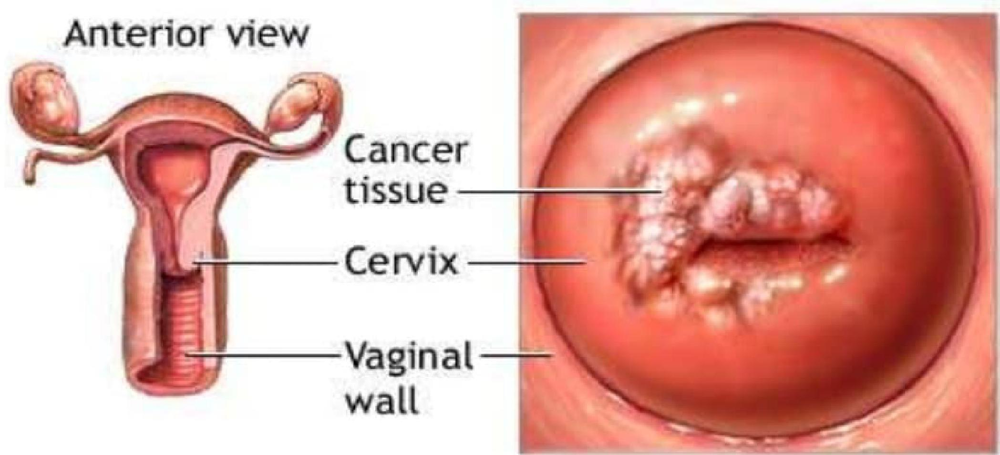
Cervix viewed through speculum with patient in lithotomy position
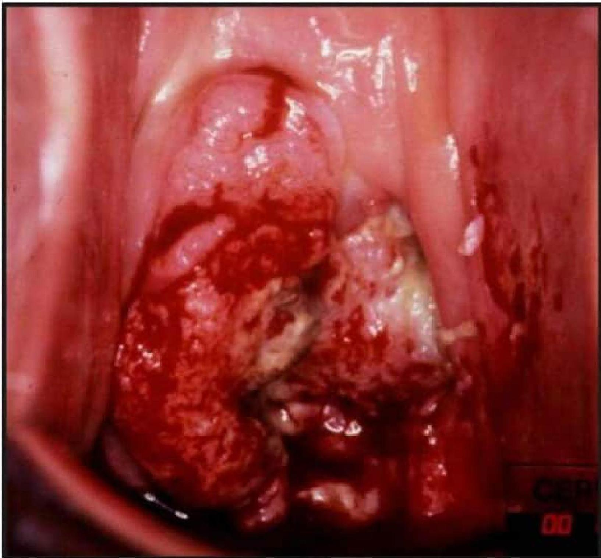
Precipitating Factors
- Low socioeconomic groups
- Early first marriage
- Early and frequent intercourse
- Multiple sex partners
- High parity
- Poor hygiene
Early Detection & Diagnosis
- The practice of good perineal needs must be emphasized.
- Avoid sex in an early age, avoid numerous partners, and practice the use of condom.
- Cancer warning signs: abnormal vaginal bleeding, and spotting after having sex.
- Early detection includes Pap smear for women over age 18.
Pap Smear
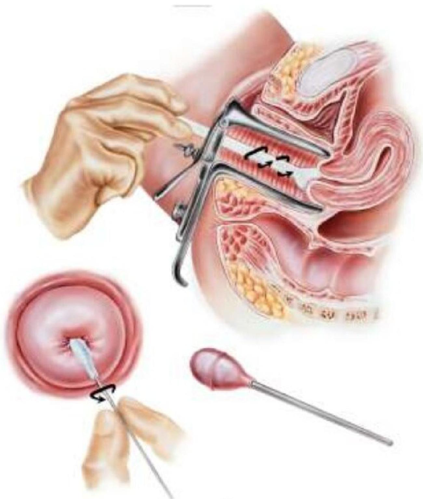
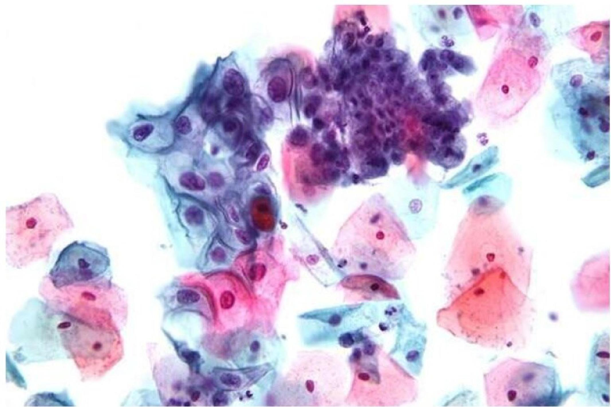
Biopsy
Cervical biopsy ("punch"): small tissue samples are taken from the cervix and examined for disease or other problems.
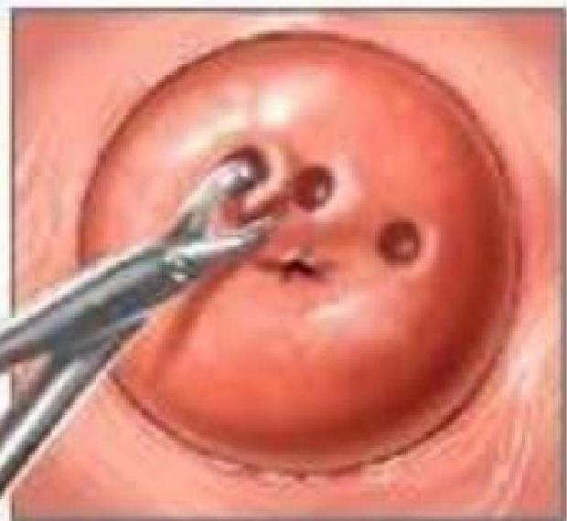

Assessment Findings
- Painless vaginal bleeding postmenstrually and postcoitally
- Foul-smelling or serosanguinous vaginal discharge
- Pelvic, lower back, leg or groin pain
- Anorexia and weight loss
- Leakage of urine and feces from the vagina
- Dysuria
- Hematuria
- Cytological changes on Papanicolaou’s Test
Interventions
Nonsurgical
- Chemotherapy
- Cryosurgery
- External Radiation
- Internal Radiation Implants
- Laser Therapy
Surgical
- Hysterectomy
- Pelvic Exenteration
Hysterectomy
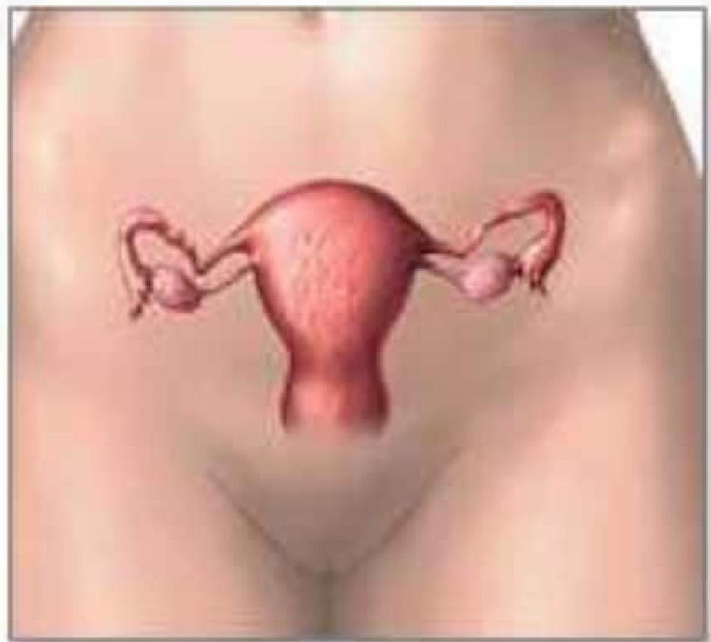
Before
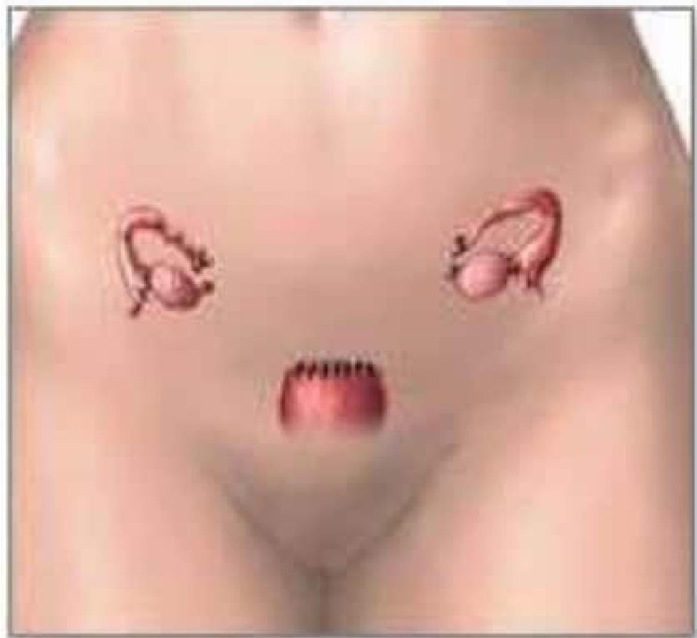
After
Post-Operative Care
- ESTROGEN replacement immediate post op if the ovaries were removed
- No vaginal entry, douching, or intercourse for 4-6 weeks
- Avoid bending knees
02
Ovarian Cancer
Ovarian cancer is often called the "silent killer" because symptoms are vague until late stages.
- Ovarian cancer grows rapidly, spreads fast and is often bilateral.
- Metastasis occurs by direct spread to the organs in the pelvis, by distal spread through lymphatic drainage or by peritoneal seeding.
- Prognosis is usually poor because the tumor usually is detected late.
- An exploratory laparotomy is performed to diagnose and stage the tumor.
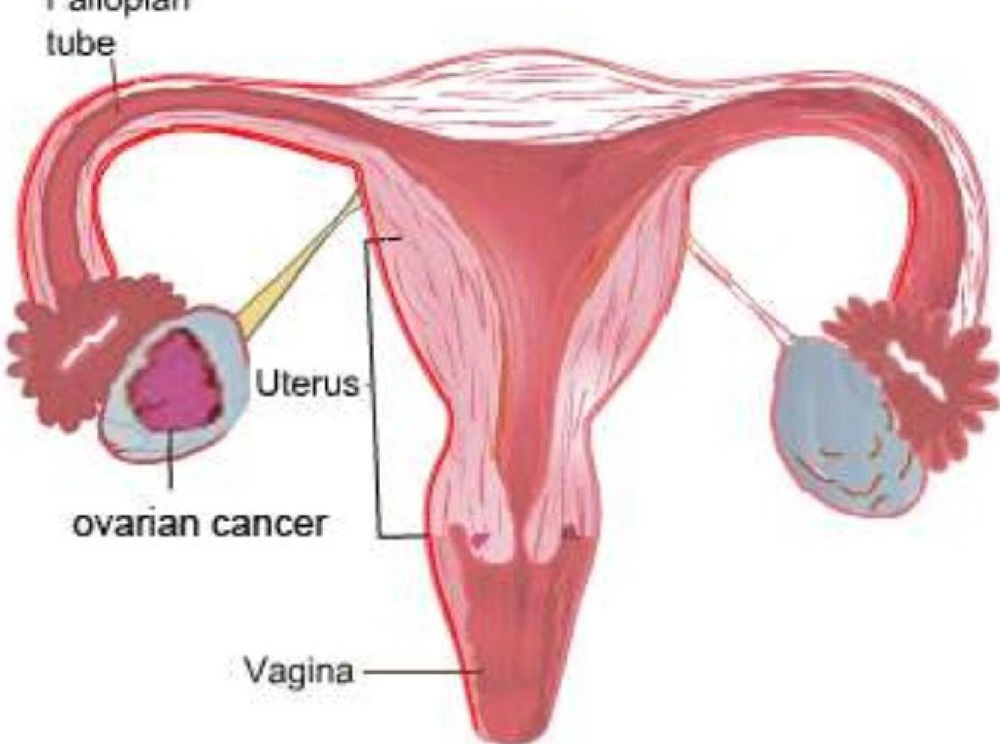
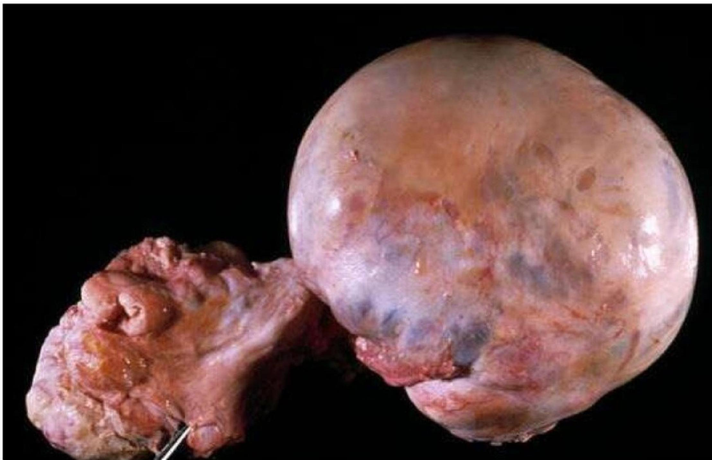

Assessment
- Abdominal discomfort or swelling
- Gastrointestinal disturbances
- Dysfunctional vaginal bleeding
- Abdominal mass
Interventions
- External radiation is used if the tumor has invaded other organs.
- Chemotherapy is used postoperatively for all stages of ovarian cancer.
- Intraperitoneal chemotherapy involves the instillation of chemotherapy into the abdominal cavity.
- Immunotherapy alters the immunological response of the ovary and promotes tumor resistance.
- Total abdominal hysterectomy and bilateral salpingo-oophorectomy may be necessary.
03
Endometrial Cancer
- Is a slow growing tumor associated with the menopausal years.
- Metastasis occurs through the lymphatic system to the ovaries and pelvis; via the blood to the lungs, liver and bone; or intra-abdominally to the peritoneal cavity.
Note: Fibroid tumors may occur in various regions of the uterus but are typically benign.
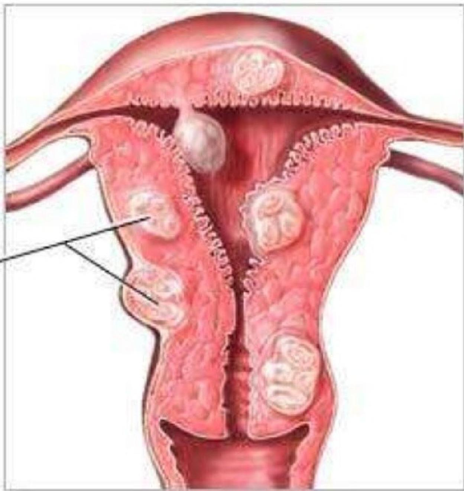
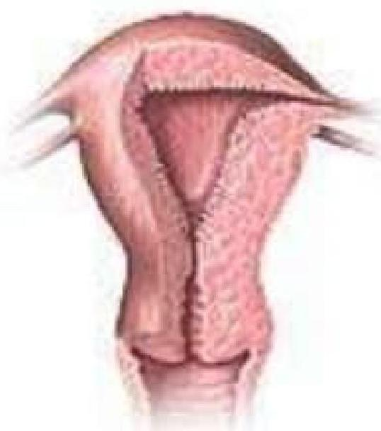

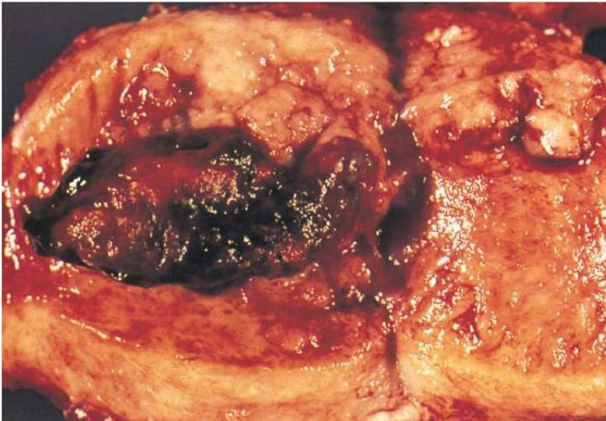
Precipitating Factors
- History of uterine polyps
- Nulliparity
- Polycystic ovary disease
- Estrogen stimulation
- Late menopause
- Family history
Assessment Findings
- Postmenopausal bleeding
- Watery, serosanguinous discharge
- Low back, pelvic, or abdominal pain
- Enlarged uterus in advanced stages
Interventions
Nonsurgical
- External radiation or internal radiation is used alone or in combination with surgery, depending on the stage of cancer.
- Chemotherapy is used to treat advanced or recurrent disease.
- Progestational therapy with medication such as medroxyprogesterone (Depo-Provera) or megestrol acetate (Megace) is used for estrogen dependent tumors.
- Tamoxifen (Novaldex), an antiestrogen, also maybe prescribed.
Surgical
- Total abdominal hysterectomy and bilateral salpingo-oophorectomy (TAH-BSO).
04
Breast Cancer
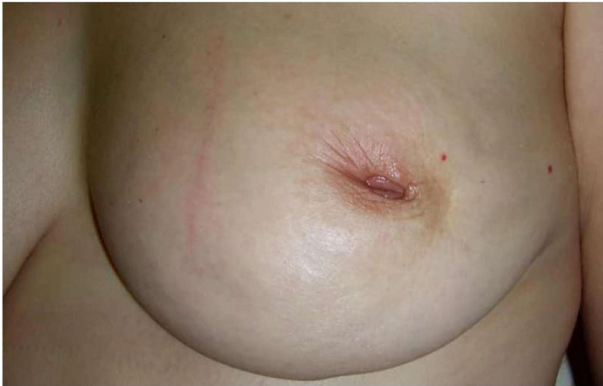
- Breast cancer is classified as invasive when it penetrates the tissue surrounding the mammary duct and grows in an irregular pattern.
- Common sites of metastasis are the bones, lungs; metastasis also occurs to the brain and liver.
- Diagnosis is made by breast biopsy through a needle aspiration or by surgical removal of the tumor with microscopic examination for malignant cells.
- Prevention: MONTHLY BSE
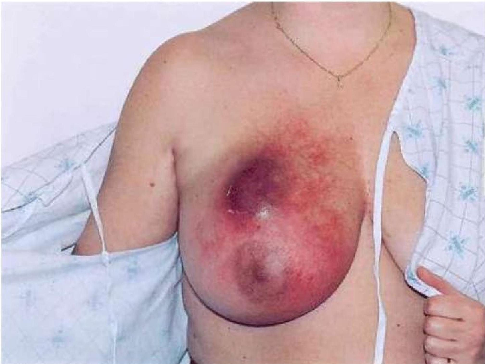
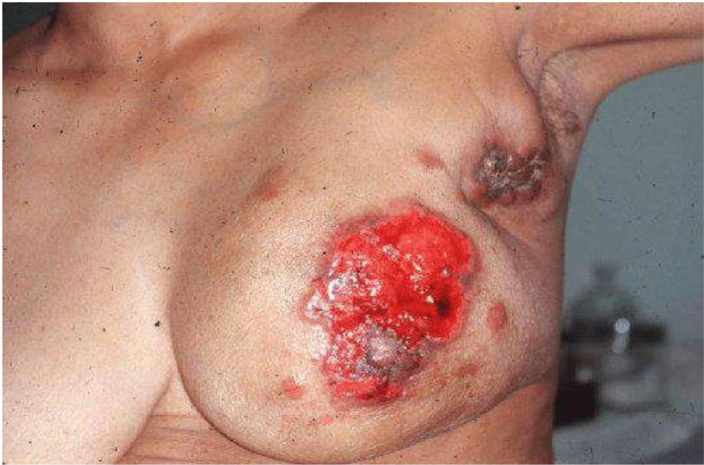
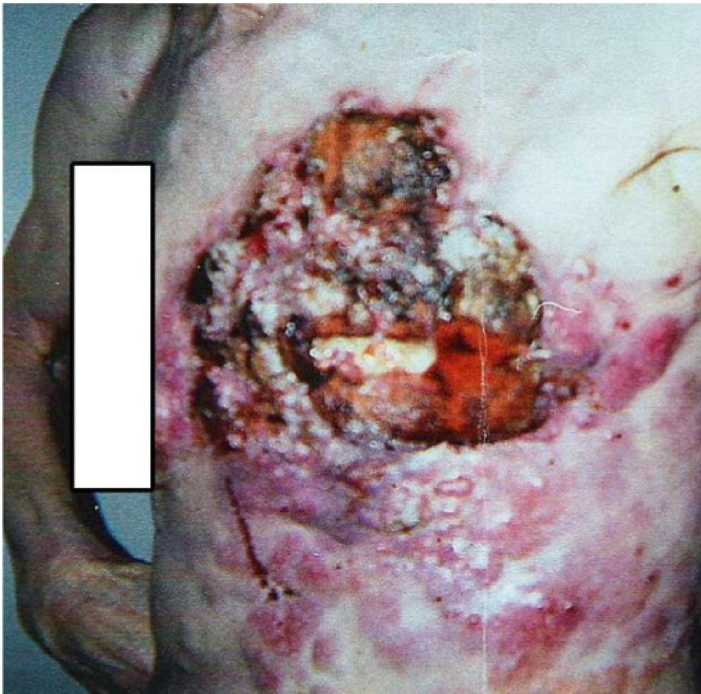
Precipitating Factors
- Family history
- Early menarche and late menopause
- Previous cancer of the breast, uterus or ovaries
- Nulliparity
- Obesity
- High dose radiation exposure to chest
- High fat diet
Prevention
- Advice clients to reduce the amount of fat in the diet.
- BSE once a month
- Yearly breast exam by a health care provider
- Baseline mammogram between the ages 35-39
- Yearly mammogram after the age 40
Breast Self-Examination (BSE)

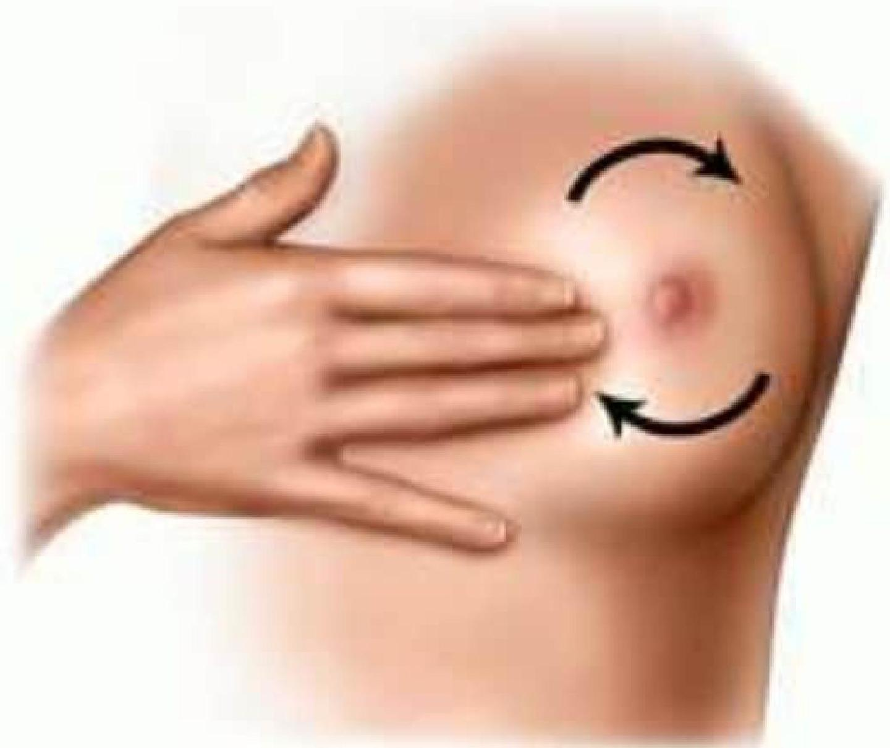
Mammography
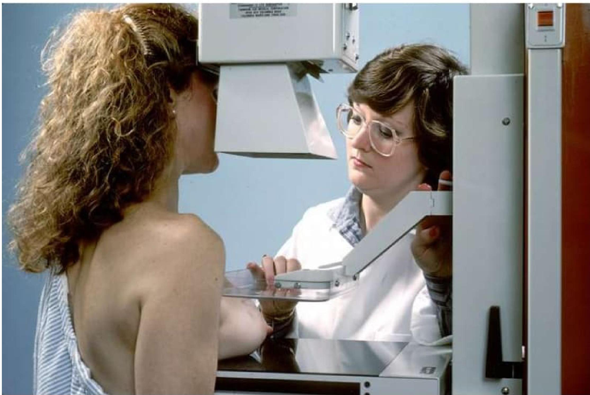
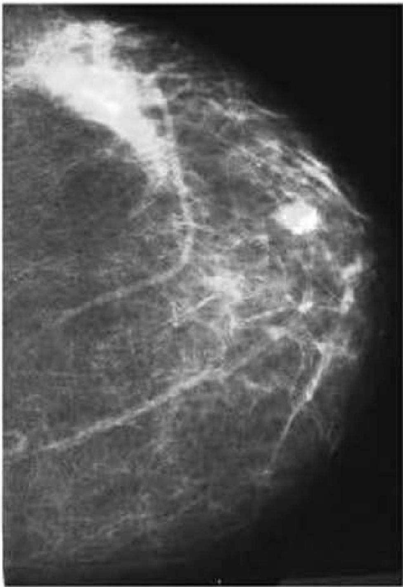
Assessment
- Mass felt during BSE, usually in the upper outer quadrant or beneath the nipple.
- A fixed, irregular noncapsulated mass.
- A painless mass except in late stages.
- Nipple retraction or elevation.
- Asymmetry, with affected breast being higher.
- Bloody or clear nipple discharge.
- Skin dimpling, retraction, or ulceration.
- Skin edema or peau d’orange skin.
- Axillary lymphadenopathy.
- Lymphedema of the affected arm.
Peau d'Orange
Appearance of breast skin resembling an orange peel due to edema and blocked lymphatics.
Interventions
Nonsurgical Interventions
- Chemotherapy
- Radiation therapy
- Hormonal manipulation via the use of medication in postmenopausal women or other medications such as tamoxifen (Novadex) for estrogen receptor positive tumors
Surgical Interventions
- Surgical breast procedures with possible breast reconstruction
- Oophorectomy for estrogen receptor – positive tumors
- Ablative therapy with adrenalectomy or chemical ablation, which blocks the production of cortisol, androstenedione, and aldosterone.
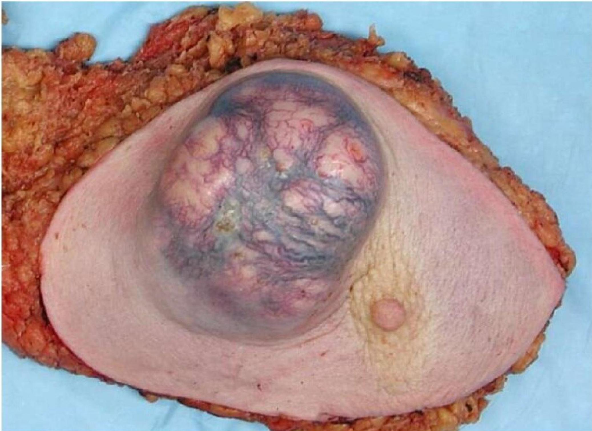
Mastectomy
Knowledge Check
Test Your Understanding
Complete this quiz to assess your comprehension of Female Reproductive Cancers.
Loading quiz...